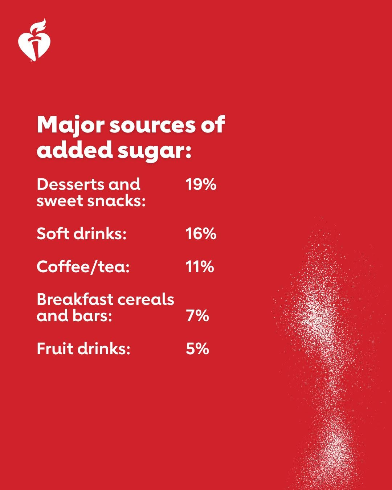
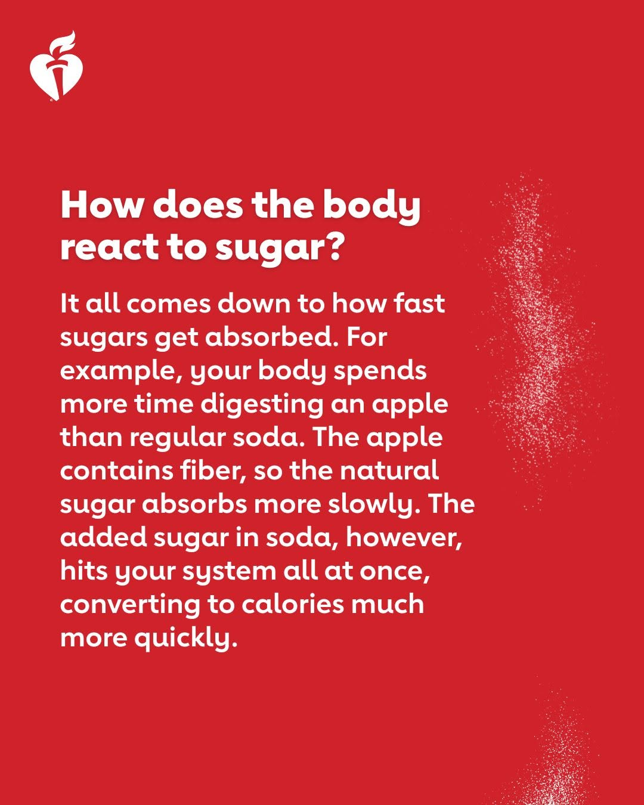
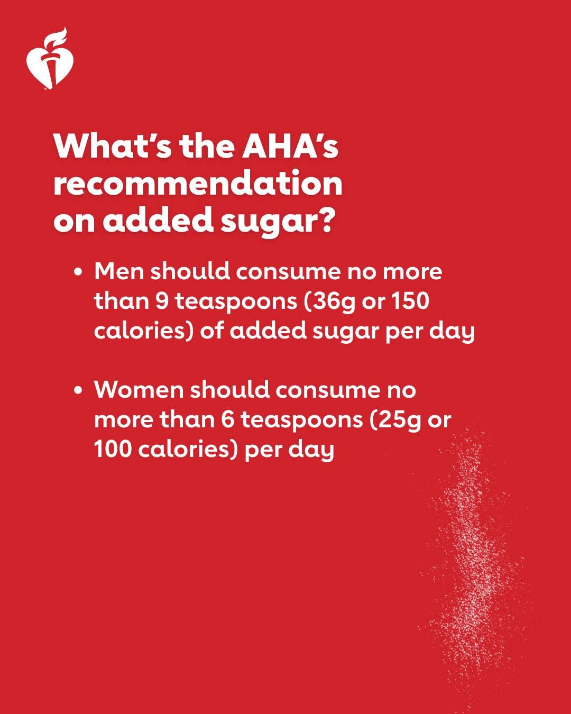
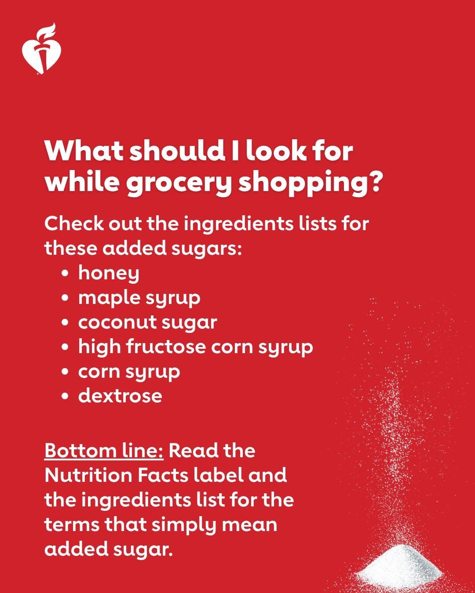

For many years, the AHA has been saying that added sugar should be limited, because it directly causes weight gain and heart disease:
Men - 36g / day (9 teaspoons)
Women - 25g /day (6 teaspoons)
This includes honey and maple syrup.
Louis cites the AHA limits on added sugar (36 g or 9 teaspoons for men, 25 g or 6 teaspoons for women, including honey and maple syrup) alongside the AHA's note that the average American eats 17 teaspoons daily, about 60 pounds a year.
For many years, the AHA has been saying that added sugar should be limited, because it directly causes weight gain and heart disease:
Men - 36g / day (9 teaspoons)
Women - 25g /day (6 teaspoons)
This includes honey and maple syrup.
The average American consumes 17 teaspoons of added sugar every day, 2 to 3 times the recommended amount. That adds up to around 60 POUNDS of added sugar every year. Scroll to see what that means for your health, and how to spot and avoid added sugars.





A shared summary describes a 15-year JAMA Internal Medicine study in which people getting 25% or more of calories from added sugar had over twice the CVD death risk of those under 10%, regardless of weight or other factors. Louis clarifies that the comparison is with dietary cholesterol, not blood cholesterol.
Louis says the diet the AHA now recommends is essentially a traditional Mediterranean/DASH diet, essentially the same as the group's recommendation. The linked posts are unavailable, so there is no detail.

Louis explains that adding CAC score to the AHA PREVENT-ASCVD equations improves prediction only modestly in US adults 45-79, suggesting standard risk factors already capture much of what CAC reflects. He notes that a very high CAC should still be treated as high risk.
Shared from Harvard Chan: an American Heart Association statement in Circulation says most adults can safely consume up to 400 mg caffeine daily (up to five 8-oz cups of coffee), possibly with cardiovascular benefits. Frank Hu co-authored it as vice chair.
A shared summary of the AHA scientific statement says coffee links to lower risk of type 2 diabetes, coronary disease, heart failure, stroke and AFib, with greatest benefit at 2-4 cups and up to 5. Tea was also associated with better outcomes; energy drinks and caffeine supplements differ.

A shared summary says AHA now finds up to 400 mg caffeine daily safe for most adults, with moderate intake linked to lower risk of heart disease, stroke, heart failure and AFib. The DECAF trial found fewer AFib recurrences in coffee drinkers. Benefit peaks around 3-4 cups.